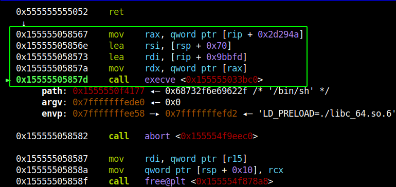

Binary Exploitation [pwnable.tw] - BabyStack
Challange Description
| Name | BabyStack |
| Points | 250 |
| Solves | 455 times |
| Category | Exploitation |
| Description | Can you find the password in the stack? |
Binary Protection
Let’s check the binary protection
Seems like binary has all the protection are on. We need to leak binary/libc address to create a reliable exploit.
Vulnerable Application
Below is the decompiled code for the main loop of the application.
Before starting the main loop the application allocation a memory via mmap and stores its address in the DAT_unknown_map variable, this is done in function setup_env on line 14. Then its open /dev/urandom and copies 16-byte data into the stack memory. This data is then copied from the stack memory to the memory location pointed by DAT_unknown_map. This data is the password which the user will be authenticated.
There are three actions in the application which are triggered by integer 1, 2 and 3. The input of 1 will trigger password checking functionality where input is taken( maximum size of 127 bytes) and is checked and if the authentication was successful then the global variable DAT_is_authenticated is set to value of 1 which is done by function check_password on line 30. The input value of 2 will break from the infinite while loop and return from the main function. The input value of 3 will prompt the user for input of maximum 63 bytes which will be copied into the user_buf buffer which is on the stack this is done by copy_user_input function on line 30. There is nothing complicated about this.
Vulnerable Code
The main vulnerability lies in the authentication function. Try to understand the issue yourself. Below is the code of authentication function.
The main culprit of the vulnerability is strncmp function in which the number of bytes to compare is calculate using the user_input buffer controlled by the user. So if the user just passes a null byte to compare, it will consider the compare size as zero, and it will return 0(which mean strings are equal), which is basically an authentication bypass. That’s not all since the comparison size can be controll by user, user can choose to set the comparsion size to 1 and compare its input and brute-force the first password byte and, recover that byte. This way we recover one-byte at a time to disclose the stack buffer. Since the limit of the user_input buffer is 127 bytes, you can recover that much stack data. The only thing we need to take care is the null-bytes in the stack buffer which is consider as string termination.
Stack Layout
Since the stack data of main function is going to be critical to solve this challenge let see what data is stored on the stack, Below is the stack layout of the stack main function
| Offset | Size | Value |
|---|---|---|
| esp | 64 | user copy buf |
| esp + 64 | 16 | password |
| esp + 72 | 16 | user action |
| esp + 104 | 8 | libc main ret addr |
The stack has password, and return address which can be overwritten for code execution (if we can overwrite it!). The return address can also be used to leak libc address(if we can reach it).
Another vulnerability is in the copy_user_input function which uses strcpy function for buffer copy. Let’s look at the code yourself and try to understand it.
At first glance, it’s difficult to understand the overflow. Since the buffer check is done in the read_userinput function when reading the input from the user. The buffer into which the data is copied is also of the same size then how will the overflow occur?
The vulnerability is that if the user input doesn’t have a null byte, strcpy will keep coping the data from the user_input buffer until it encounters the null-byte. If this is not clear don’t worry we will discuss this in more detail in the coming sections.
I guess that all the primitives we need, auth brute-forcing can be used as read primitive and copy_user_input buffer as write primitive. This way we can create a fully-reliable remote exploit.
Application Interaction Code
Since interactive and crafting exploit input can get tricky here is a class with does the dirty work and provides nice functions to interact with the application
1 | from pwn import * |
The Libc Leak
Since the binary has non-exec stack protection to execute shellcode we will have to use ROP technique, and for that, we will need libc base address since libc is gadget rich library. Sometimes during function calls address of the libc memory ranges are stored on the stack later the same stack can be reused by the main program, we can use the opportunity to leak the libc address from the stack. This is exactly the case with the copy_user_input/check_password function, below is the stack of copy_user_input function.
As you can see in the highlighted box the address of _IO_file_overflow+235 function is on the stack and the Libc-base is at an offset of 0x7a81b from that address. You will provide non-null input in the copy_user_input function to eliminate all the null bytes till the start of the address and once the strcpy function has executed, that buffer will be copied on main function stack which you can brute-force using the check_password function to recover that value. Below is the result of what we just discussed
As you can see the libc address highlighted in green and the buffer which was copied(highlighted in cyan). Below is the code to carry-out the libc-leak.
1 | def leak_libc_base(): |
Code Execution
Earlier we discussed that how copy_user_input function can be used to do out-of-bounds write, but there is one question that needs clarity, the read_userinput function only takes 63 bytes and the destination buffer(pointed by the function parameter) is just on byte bigger, even if we somehow managed to do the overflow, we cannot control user_inputmore than 63 bytes, how useful will this overflow would be anyway?
The answer is, we just don’t control 63 bytes we can control up 127 bytes, that because before calling the copy_userinput function, we can call check_password function which allows you to write value up to 127 bytes, we can prime the stack with whatever data we want and then do a stack-reuse by calling copy_userinput function immediately after that, to copy more than 63 bytes of data. Below is an example of once such overflow
We can eliminate any null-byte in main function stack using this primitive to do a buffer copy of more than 63 bytes, this exactly what we did in the libc-leak, if you read the code closely, we copied bytes in the buffer using this method and, then did brute-force on the stack to recover the libc address.
Code Execution
Next, to get code execution we need to overwrite the return address of the main function. We will overwrite the return address with one jump shellcode which you can find using one_gadget tool. Since the libc binary is provided in the challenge run the one_gadget on it to find all the offset at which we have one-shot execution code. After testing different offset, I found the offset 0xf0567 to be working.
{kind=link}
Another security check we need to take care of is the canary check, which is highlighted in the main code function line 51-55. While doing all the buffer manipulation if you keep the original password unchanged you can pass the memcmp check. So before starting any buffer manipulation the first step of the exploit should be to recover the original password with the brute-forcing primitive.
Below is the code for what we just discussed:
1 | # the magic of one_gadget tool |
Below is the output of the one-shot shellcode

Exploit Code
Putting it all together here the full-working exploit.
1 |
|
Exploit Execution
To summarize the exploit it does the below steps:
- Recover the original password for later use (to bypass canary check)
- Do the libc leak and calculate one-shot shellcode
- Do the main return overwrite with the one-shot shellcode
- Exit the application, this step should give you the shell.
The brute forcing can be little time consuming so you need to be patient to get the shell. If you execute the above code you should get output something like this.
Conclusion
This was a wily little stack exploitation challenge which turns out to be very tricky to exploit. This challenge will test some of advance exploitation technique, although on the surface looks like we just manipulating stack. But, we are were reading and writing data to/from the stack with several constrains to achieve code execution.